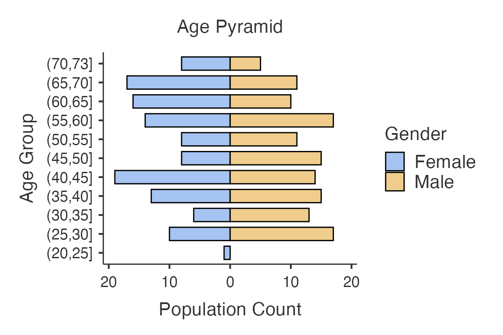

Use ClinicoPathDescriptives in R
Source:vignettes/use-ClinicoPathDescriptives-in-R.Rmd
use-ClinicoPathDescriptives-in-R.Rmd
library(ClinicoPath)
#> Registered S3 method overwritten by 'future':
#> method from
#> all.equal.connection parallelly
#> Warning: replacing previous import 'dplyr::select' by 'jmvcore::select' when
#> loading 'ClinicoPath'
#> Warning: replacing previous import 'cutpointr::roc' by 'pROC::roc' when loading
#> 'ClinicoPath'
#> Warning: replacing previous import 'cutpointr::auc' by 'pROC::auc' when loading
#> 'ClinicoPath'
#> Warning: replacing previous import 'magrittr::extract' by 'tidyr::extract' when
#> loading 'ClinicoPath'
#> Warning: replacing previous import 'jmvcore::select' by 'dplyr::select' when
#> loading 'ClinicoPath'
#> Warning: replacing previous import 'ROCR::plot' by 'graphics::plot' when
#> loading 'ClinicoPath'
#> Warning: replacing previous import 'dplyr::select' by 'jmvcore::select' when
#> loading 'ClinicoPath'
data("histopathology")
dplyr::glimpse(histopathology)
#> Rows: 250
#> Columns: 38
#> $ ID <dbl> 1, 2, 3, 4, 5, 6, 7, 8, 9, 10, 11, 12, 13, 14, 15…
#> $ Name <chr> "Tonisia", "Daniyah", "Naviana", "Daerion", "Tamy…
#> $ Sex <chr> "Male", "Female", "Male", "Male", "Female", "Fema…
#> $ Age <dbl> 27, 36, 65, 51, 58, 53, 33, 26, 25, 68, 34, 45, 3…
#> $ Race <chr> "White", "White", "White", "White", "Black", "Whi…
#> $ PreinvasiveComponent <chr> "Present", "Absent", "Absent", "Absent", "Absent"…
#> $ LVI <chr> "Present", "Absent", "Absent", "Present", "Absent…
#> $ PNI <chr> "Absent", "Absent", "Absent", "Absent", "Absent",…
#> $ LastFollowUpDate <chr> "2019.10.22 00:00:00", "2019.06.22 00:00:00", "20…
#> $ Death <chr> "YANLIŞ", "DOĞRU", "DOĞRU", "YANLIŞ", "YANLIŞ", "…
#> $ Group <chr> "Control", "Treatment", "Control", "Treatment", "…
#> $ Grade <dbl> 2, 2, 1, 3, 2, 2, 1, 2, 3, 3, 3, 1, 1, 1, 2, 1, 2…
#> $ TStage <dbl> 4, 4, 4, 4, 1, 4, 2, 3, 4, 4, 3, 2, 2, 2, 4, 4, 2…
#> $ `Anti-X-intensity` <dbl> 3, 2, 2, 3, 3, 3, 2, 2, 1, 2, 3, 3, 3, 1, 3, 3, 3…
#> $ `Anti-Y-intensity` <dbl> 1, 1, 2, 3, 3, 2, 2, 2, 1, 3, 1, 2, 2, 2, 2, 3, 2…
#> $ LymphNodeMetastasis <chr> "Present", "Absent", "Absent", "Absent", "Absent"…
#> $ Valid <chr> "YANLIŞ", "DOĞRU", "YANLIŞ", "DOĞRU", "DOĞRU", "D…
#> $ Smoker <chr> "YANLIŞ", "YANLIŞ", "DOĞRU", "YANLIŞ", "DOĞRU", "…
#> $ Grade_Level <chr> "high", "low", "low", "high", "low", "moderate", …
#> $ SurgeryDate <chr> "2019.07.08 00:00:00", "2019.03.18 00:00:00", "20…
#> $ DeathTime <chr> "Within1Year", "Within1Year", "Within1Year", "Wit…
#> $ int <chr> "2019-07-08 UTC--2019-10-22 UTC", "2019-03-18 UTC…
#> $ OverallTime <dbl> 3.5, 3.1, 3.1, 4.9, 3.3, 9.3, 6.3, 9.0, 5.8, 9.9,…
#> $ Outcome <dbl> 0, 1, 1, 0, 0, 0, 1, 1, 1, 0, 1, 1, 1, 1, 1, 0, N…
#> $ Mortality5yr <chr> "Alive", "Dead", "Dead", "Alive", "Alive", "Alive…
#> $ `Rater 1` <dbl> 0, 1, 1, 0, 0, 0, 1, 1, 1, 0, 1, 1, 1, 1, 1, 0, N…
#> $ `Rater 2` <dbl> 0, 0, 0, 0, 0, 0, 0, 0, 0, 0, 0, 0, 0, 0, 0, 0, 0…
#> $ `Rater 3` <dbl> 1, 1, 1, 0, 1, 1, 1, 1, 1, 1, 1, 1, 1, 1, 1, 0, 1…
#> $ `Rater A` <dbl> 3, 2, 3, 3, 2, 3, 1, 1, 2, 1, 1, 3, 3, 1, 3, 2, 3…
#> $ `Rater B` <dbl> 3, 2, 3, 3, 2, 3, 1, 1, 2, 1, 1, 3, 3, 1, 3, 2, 3…
#> $ `New Test` <dbl> 0, 0, 0, 0, 0, 0, 1, 0, 0, 0, 1, 0, 0, 1, 0, 1, 1…
#> $ `Golden Standart` <dbl> 0, 0, 0, 0, 0, 0, 0, 0, 0, 0, 1, 0, 0, 1, 0, 0, 1…
#> $ MeasurementA <dbl> -1.634318251, 0.370706042, 0.015853764, -1.235844…
#> $ MeasurementB <dbl> 0.611415041, 0.554385763, 0.742388876, 0.62184265…
#> $ `Disease Status` <chr> "Ill", "Ill", "Healthy", "Ill", "Healthy", "Ill",…
#> $ Measurement1 <dbl> 0.38663133, 0.82938032, 0.15875305, 2.44735406, 0…
#> $ Measurement2 <dbl> 1.86537533, 0.54248017, 0.07008299, 2.40713373, 0…
#> $ Outcome2 <chr> "DOD", "DOOC", "AWD", "AWOD", "DOD", "DOOC", "AWD…
ClinicoPath::agepyramid(
data = histopathology,
age = Age,
gender = Sex,
female = "Female")
#>
#> AGE PYRAMID
#>
#> Population Data
#> ────────────────────────────────
#> Population Female Male
#> ────────────────────────────────
#> (70,73] 8 5
#> (65,70] 17 11
#> (60,65] 16 10
#> (55,60] 14 17
#> (50,55] 8 11
#> (45,50] 8 15
#> (40,45] 19 14
#> (35,40] 13 15
#> (30,35] 6 13
#> (25,30] 10 17
#> (20,25] 1 0
#> ────────────────────────────────
age_pyramid <-
ClinicoPath::agepyramid(
data = histopathology,
age = Age,
gender = Sex,
female = "Female")
age_pyramid$pyramidTable
#>
#> Population Data
#> ────────────────────────────────
#> Population Female Male
#> ────────────────────────────────
#> (70,73] 8 5
#> (65,70] 17 11
#> (60,65] 16 10
#> (55,60] 14 17
#> (50,55] 8 11
#> (45,50] 8 15
#> (40,45] 19 14
#> (35,40] 13 15
#> (30,35] 6 13
#> (25,30] 10 17
#> (20,25] 1 0
#> ────────────────────────────────
age_pyramid$pyramidTable$asDF
#> Pop Female Male
#> 1 (70,73] 8 5
#> 2 (65,70] 17 11
#> 3 (60,65] 16 10
#> 4 (55,60] 14 17
#> 5 (50,55] 8 11
#> 6 (45,50] 8 15
#> 7 (40,45] 19 14
#> 8 (35,40] 13 15
#> 9 (30,35] 6 13
#> 10 (25,30] 10 17
#> 11 (20,25] 1 0
age_pyramid$plot
age_pyramid$plot$state
#> # A tibble: 21 × 3
#> Gender Pop n
#> <chr> <ord> <int>
#> 1 Female (20,25] 1
#> 2 Female (25,30] 10
#> 3 Female (30,35] 6
#> 4 Female (35,40] 13
#> 5 Female (40,45] 19
#> 6 Female (45,50] 8
#> 7 Female (50,55] 8
#> 8 Female (55,60] 14
#> 9 Female (60,65] 16
#> 10 Female (65,70] 17
#> # ℹ 11 more rows
age_pyramid$plot$plot
temp_file_png <- tempfile(fileext = ".png")
age_pyramid$plot$saveAs(paste0(temp_file_png, ".png"))
#> [1] TRUE
age_pyramid_plot <- png::readPNG(paste0(temp_file_png, ".png"))
temp_file_tiff <- tempfile(fileext = ".tiff")
tiff::writeTIFF(what = age_pyramid_plot,
where = paste0(temp_file_tiff, ".tiff"),
compression = "LZW")
#> [1] 1| |Pop | Female| Male| | |:——-|——:|—-:| | |(70,73] | 8| 5| | |(65,70] | 17| 11| | |(60,65] | 16| 10| | |(55,60] | 14| 17| | |(50,55] | 8| 11| | |(45,50] | 8| 15| | |(40,45] | 19| 14| | |(35,40] | 13| 15| | |(30,35] | 6| 13| | |(25,30] | 10| 17| | |(20,25] | 1| 0| |
Age Pyramid
agepyramidClass
Age Pyramid
alluvial()
Alluvial Diagrams
alluvialClass
Alluvial Plot
benford()
Benford Analysis
crosstable()
Cross Tables
crosstableClass
Cross Table
histopathology
histopathology
reportcat()
Summary of Categorical Variables
reportcatClass
Summary of Categorical Variables
summarydata()
Summary of Continuous Variables
summarydataClass
Summary of Continuous Variables
tableone()
Table One
tableoneClass
Table One
venn()
Venn Diagram
vennClass